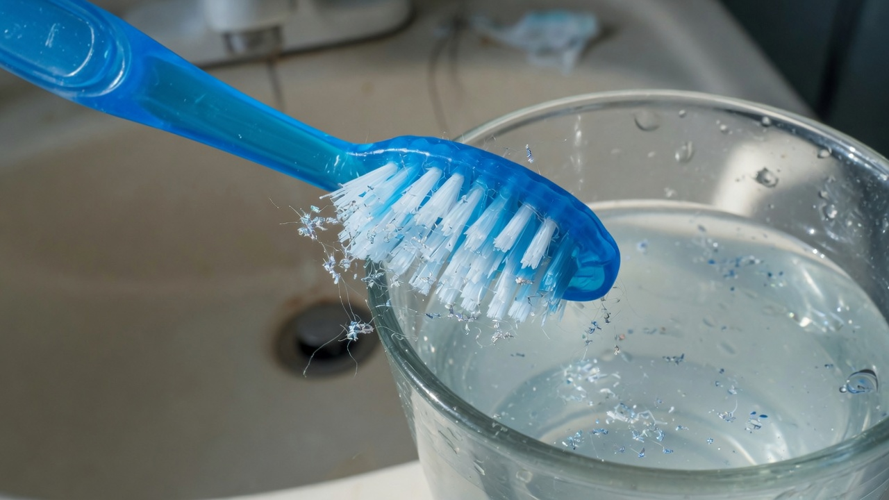
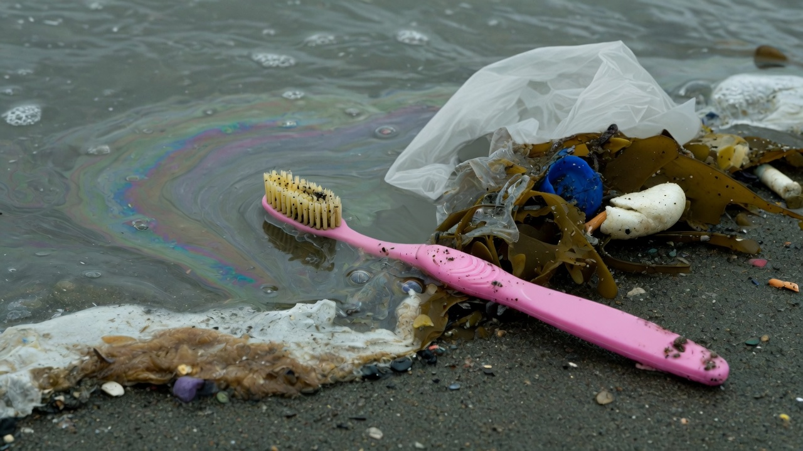
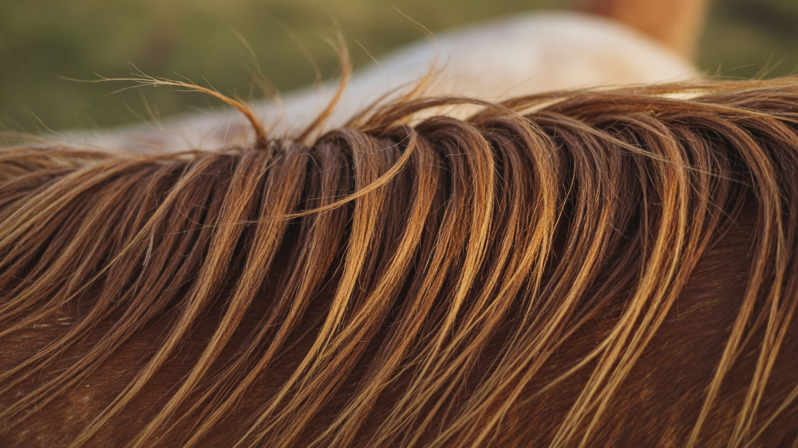

01 — O corpo
Microplásticos. O hábito invisível.
A cerda de uma escova comum não é fibra natural. É nylon — poliamida, um plástico derivado de petróleo — ou um primo sintético como o PBT. Duas vezes ao dia, esse filamento é atritado contra o esmalte, a gengiva e o creme. O desgaste não é só da boca: é da própria cerda.
Estudos de escovação simulada, com espectroscopia Raman, encontraram microplásticos soltos em todas as marcas testadas. Em um trabalho de 2025, a média chegou a cerca de 39 partículas por dia, entre 8 e 1995 micrômetros — fragmentos, fibras, filmes. Outra leitura, de 2023, estimou milhares de detritos plásticos no uso cotidiano. A boca é mucosa. Partículas pequenas não precisam ser engolidas para entrar.
Micro e nanoplásticos já foram medidos no sangue e, em 2024, no New England Journal of Medicine, dentro de placas de artéria carótida — associados a mais infarto, AVC e morte no acompanhamento. A escova não é a única fonte. É, porém, uma via oral, repetida, por décadas. Nylon também retém químicos do creme, como o triclosan, e os devolve depois. O hábito que deveria limpar deixa matéria que o corpo não pede.

02 — A Terra
Depois do corpo, o planeta.
Quando a escova sai da pia, o problema não acaba. Nylon e polipropileno não voltam para o solo. Fragmentam. Uma escova de plástico leva da ordem de 500 anos para se partir em pedaços menores — e esses pedaços continuam sendo plástico. Não há desaparecimento. Há redução de escala.
A recomendação odontológica é trocar o objeto a cada três ou quatro meses. Só nos Estados Unidos, isso passa de um bilhão de escovas por ano. No mundo, se o mesmo ritmo valesse para todos, seriam cerca de 23 bilhões. Uma vida inteira deixa algumas centenas de unidades. Quase nenhuma se recicla de verdade: cabo, borracha e cerda são plásticos misturados, difíceis de separar.
O que não vai para o aterro vai para o rio, o mar, o peixe, o sal. O mesmo tipo de partícula que se solta na boca é o que permanece na Terra. O hábito pessoal e o rastro planetário são o mesmo material.

03 — A crina
Por que crina, e não plástico.
A cerda HARU é crina de cavalo: cabelo de crina e cauda, selecionado. A composição é queratina — a mesma proteína fibrosa do cabelo e das unhas humanas, um polímero natural de aminoácidos, não de petróleo. O diâmetro típico fica entre 50 e 80 micrômetros, mais fino que as cerdas de javali, macio o bastante para a gengiva.
Antes de entrar no cabo de bambu, a crina é esterilizada a vapor. Não há nylon, PBT, “nylon de planta” nem bioplástico disfarçado. Quando o fio se desgasta, o que se solta é proteína orgânica — não um microplástico. O corpo já convive com queratina. O solo também: a crina se decompõe; o cabo de bambu, em meses, se o destino for o composto certo.
Nylon foi a substituição industrial das cerdas naturais, a partir do fim dos anos 1930, porque era barato, uniforme e eterno. Eterno é exatamente o problema. A crina não promete durar séculos. Promete cumprir o hábito e desaparecer da forma certa.
Trocar plástico por crina não é nostalgia. É recusar uma via cotidiana de polímero na mucosa — e um objeto que, depois de usado, continua no planeta. Matéria no lugar de resina. Esse é o essencial.